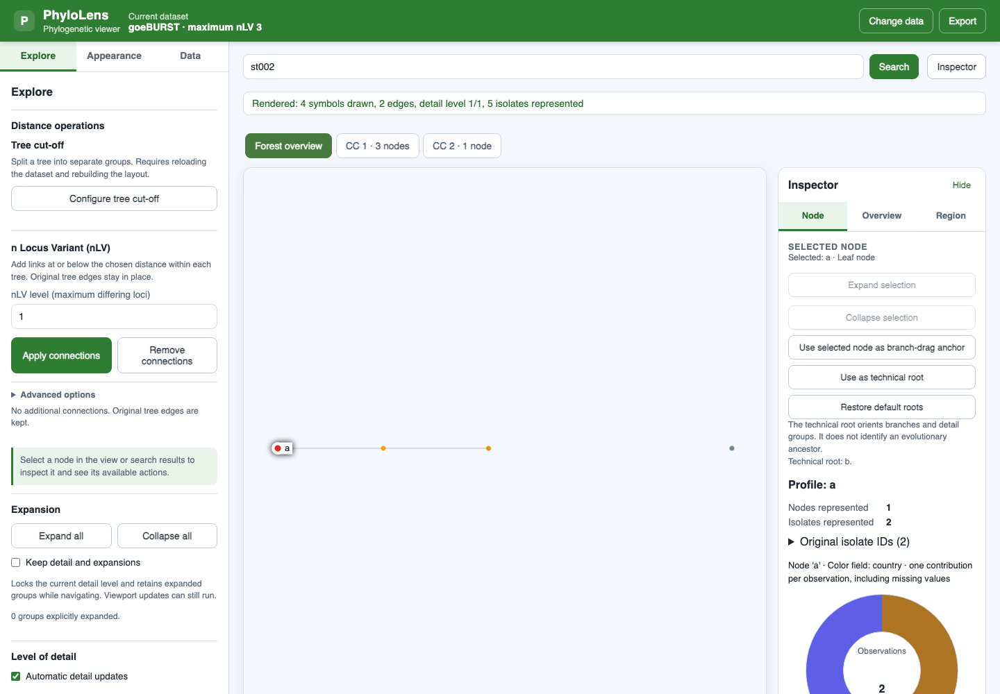

Display and navigation
Once the data loads, you can move around the tree, search for a node and inspect its sample information. This chapter shows how to use the display controls.
Use the Explore, Appearance and Data tabs to switch tasks. The header’s Load data button returns to input settings. On a narrow screen, Controls shows or hides the left panel so you can give more room to the tree.
Move, zoom and select#
Drag the background to pan and use the mouse wheel to zoom. Select an ordinary node to inspect its identifier and observations. Use the search controls to find an identifier or ancillary value, including records outside the current view.
Typing search also matches original isolate identifiers. Several matching isolates in one profile produce one profile result. Focusing a result centres the view on its node.

Inspect nodes and observations
Open Inspector to switch between Node, Overview and Region. Choose Hide to give the tree more space.
The Node tab shows the selected profile, its original isolate identifiers and available branch actions. A shared typing profile can represent several isolates; a triangular detail group can represent several tree nodes. These counts describe different things.
The Overview distribution summarizes the current view, using the selected colour and pie fields. It is not a whole-dataset census when only part of the tree is loaded. The Node distribution describes the selected node or group. For a manually folded branch, the distribution describes only its retained root node; hidden descendants are not added to that root’s sample information.
If the selected node moves outside the current view, the inspector says so. Search for it again to bring it back into view.
Select a region
- In Explore, choose Select region, then drag a box over the display. You can also hold Shift while dragging.
- Read the selected-node count and distribution in the inspector’s Region tab.
- Turn off the active region-selection control to clear the selection.
Region selection uses the loaded nodes at their displayed positions, including positions you have dragged. It does not fetch every hidden or offscreen node. The count is the number of selected display nodes; a representative can stand for more than one original node. Choose colour and pie fields to see their distribution in the selected region.
Levels of detail#
Large trees are displayed using detail groups. Zoom in to show finer detail. A triangular group represents several connected nodes; it is not an individual isolate.

Use Expand selected branch or group, Expand all and Collapse all to control detail. Branch folding follows the current technical root. A request can show only part of a group when the display budget is reached; it does not mean that the remaining observations have been removed.
Keep detail and expansions locks the current detail tier and retains expanded groups while still allowing view updates as you pan. Turning it off resumes automatic detail selection.
Automatic detail updates is different: turn it off to keep the currently loaded view as you navigate. It does not control node movement. Use the separate layout-relaxation controls for that.
Automatic detail groups use amber triangles. Manually folded branches use violet symbols. Their counts describe represented tree nodes, while profile and distribution counts describe isolate observations.
Colours, pies and node sizes
Open Appearance and use Color and pie fields to select a sample field. Click a selected field again to deselect it. Select several fields to show observed combinations, such as country together with collection year. Each observation contributes once to its combination.
Choose None — neutral nodes to clear the field mapping. Turn off Show node pie charts to show solid nodes while keeping the selected fields, sample information and inspector distributions.
Under Node size, choose Profile count or a numeric field. Linear uses the value directly; Logarithmic compresses large differences. Missing or nonnumeric values use the base size. Detail-group symbols use their represented-node count with a bounded size mapping; their area is not an exact proportional chart.
Use Node labels to show or hide node identifiers. These display choices do not change the tree or stored sample values.
Category colours and Other grouping
In Category colors, choose a colour for each category. Each row shows its count, percentage and grouping choice:
- Automatic uses frequency in the current view. Up to 12 categories can appear separately. With more categories, the 11 most frequent remain separate and the rest become grey Other (grouped).
- Separate reserves a category’s own slot, including when it is offscreen. Up to 11 such slots are available; excess choices are grouped in a fixed category order.
- Other always puts the category in the grouped slice.
Changing palette length does not change the slice limit. Grouping combines display slices; it does not remove observations.
Load, save and reset a palette
Save palette downloads
phyloviz-category-colors.txt. It contains one
red,green,blue line per displayed category, in the
current category order. Each channel is an integer from 0 to 255.
Load palette applies that order, so select the same
fields and check the categories before reusing an ordered palette.
You can also load JSON that names its categories, for example
{ "Portugal": "#2e7d32", "Spain": "#1565c0" }. A
colors object wrapping that mapping is also accepted.
Colours use six-digit hexadecimal values. With several fields,
category identities represent the observed combinations.
Reset palette restores default colours. Loading another dataset or applying a replacement table resets the palette; save colours you want to reuse. Palette files save colours, not the tree, positions or grouping choices.
Read edge distances
In Appearance → Edges, enable Edge distance labels. Choose Automatic with zoom to show them at suitable zoom levels, or At every zoom to keep them enabled throughout navigation.
Use Minimum label distance and Maximum label distance to restrict the labels shown. Both bounds are inclusive; leave a bound blank to keep it open. These settings affect labels only. They do not cut tree edges or filter nodes.
Distance-weighted edges (grayscale) encodes distances using grey shades at a constant edge width. Dragging nodes changes their drawn separation, not their stored edge distance; use the labels to read that value.
Arrange and relax the layout
The view starts in manual mode. Drag a node to move it. Zoom changes the camera and visible detail while keeping arranged positions.
- Relax layout adjusts the loaded view once and stops when it settles.
- Automatic layout relaxation also allows movement after navigation and dragging.
- Stop and keep stops movement immediately, retains the positions and disables automatic relaxation.
- Reset positions restores the computed layout, stops motion and returns to individual-node dragging.
For branch dragging, select a node and choose Use selected node as branch-drag anchor in the inspector. Drag another node to move its loaded branch away from that anchor. Choose Direct dragging to return to moving one node at a time. The anchor affects arrangement only; changing the technical root is a separate operation.
Arranged positions are kept across detail changes, component tabs and replacement sample tables during this dataset session. Resetting a component restores that panel; resetting the forest overview restores all components. Loading a new dataset or reloading the page clears manual arrangements.
Forest components#
Use the component tabs to view one tree or return to the overview. Newick components use Group labels. Typing components use local CC labels; these numbers are not clonal-complex assignments from a reference database.

Export a figure#
Open Export view, choose the resolution and label size, and download the PNG. The image can include a legend and explanations of aggregate symbols.

The export contains the current camera and visible detail, including folded branches and distance overlays. Expand the required groups before export if the figure should show individual nodes.
Resolution ranges from 1× to 4× the viewport size. In the reference app, enable Edge distance labels before exporting to include distances; the PNG shows them at every zoom. Turn that setting off to export without distance labels. The reference app includes the legend; a host application can change these choices through the PNG export API.